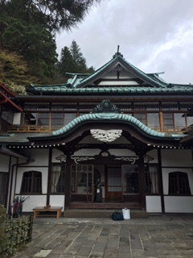

Etiquette in Japan
Etiquette, or a series of social and cultural norms concerning behavior, is an important part of Japanese culture. Become familiar with proper Japanese etiquette in various circumstances, and try to observe it whenever possible.
Kaiseki Etiquette
Follow these basic guidelines when enjoying a kaiseki meal:
- Wait to be seated until you are invited to do so by the host.
- Prior to the meal, wash your hands with the wet towel provided to you. Men are permitted to wash their faces, as well.
- After eating, put each dish back in the position it was in when served. Never discard shells or tails on the table, but instead on the plates provided.
- When done eating, place chopsticks horizontally in front of you on the chopsticks rest provided, with dirty ends facing left.

Ryokan Etiquette
Follow these basics guidelines to show respect to your hosts at the ryokan:
- Arrive on time, as your hosts will typically be awaiting your arrival, and kaiskei is served at a scheduled time.
- Change into the yukata provided by the inn after arriving.
- Remove shoes and wear slippers during your stay, particularly when walking on the tatami floors. Never wheel your roller bag on tatami mats.